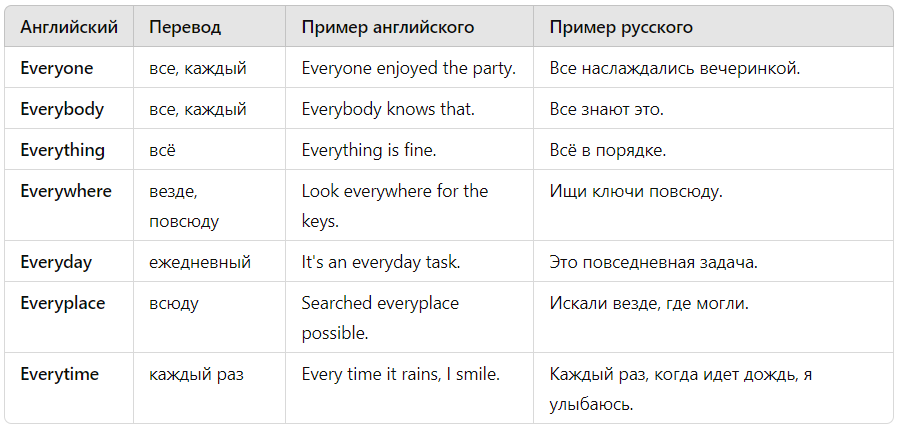

Частицы с "every-" образуют слова, указывающие на охват или включение всех возможных частей или аспектов чего-либо. Вот список таких слов

В английском языке частицы с "any-" включают различные слова, обозначающие неопределённые объекты, людей, места и время. Эти слова используются для выражения концепций возможности, выбора, неограниченности или неопределённости.
Список частиц с "any-":
Anyone — любой человек, кто-нибудь
Пример: "Anyone can join the game." — "Любой может присоединиться к игре."
Anybody — любой человек, кто-нибудь (синоним anyone)
Пример: "Does anybody know the answer?" — "Кто-нибудь знает ответ?"
Anything — что угодно, что-нибудь
Пример: "You can choose anything you like." — "Ты можешь выбрать что угодно."
Anywhere — где угодно, где-нибудь
Пример: "Sit anywhere you want." — "Садись где хочешь."
Anytime — в любое время, когда угодно
Пример: "You can call me anytime." — "Ты можешь позвонить мне в любое время."
Anyplace — где угодно, в любом месте (синоним anywhere)
Пример: "We can meet anyplace you prefer." — "Мы можем встретиться в любом месте, которое ты предпочитаешь."
Anyhow — так или иначе, как бы то ни было
Пример: "Anyhow, we managed to finish on time." — "Так или иначе, мы закончили вовремя."
Anyway — в любом случае, как бы там ни было
Пример: "Anyway, let's continue." — "В любом случае, давайте продолжим."
Anyone's — чей угодно, чья-либо, чья-то
Пример: "Is this anyone's coat?" — "Это чей-то пальто?"
Anything’s — что угодно (в сокращённых выражениях)
Пример: "Anything’s possible with effort." — "Всё возможно при усилиях."
Anywhen — в любое время, когда угодно (реже используется)
Пример: "You can come anywhen." — "Ты можешь приехать когда угодно."
Anything but — всё что угодно, кроме
Пример: "I’ll eat anything but mushrooms." — "Я буду есть всё, кроме грибов."
Anywise — как угодно, любым образом (устаревшее, редко используется)
Пример: "Anywise you can do it is fine." — "Как угодно ты можешь это сделать — это нормально."
Anyways — в любом случае (разговорное, синоним anyway)
Пример: "Anyways, we should go." — "В любом случае, нам следует идти."